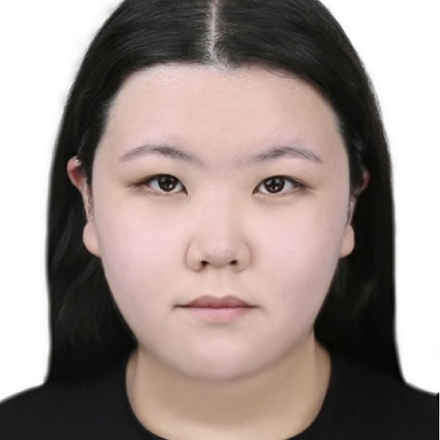
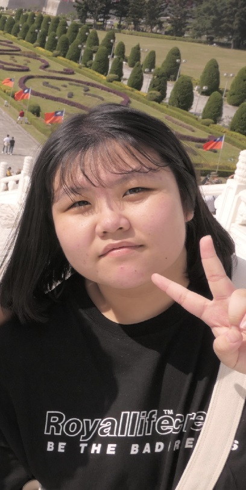

Game Programmer/Designer

Developed gameplay systems using C++, including player movement, interaction mechanics, and real-time game logic. Experienced in implementing and debugging core gameplay features, with a strong focus on building responsive and well-structured systems.
Focused on designing interactive gameplay systems and player-centered experiences. Capable of translating ideas into structured mechanics and clear game systems. Interested in balancing creativity with technical feasibility to create engaging and meaningful gameplay experiences.
Experience with OpenGL and real-time rendering, including transformations, camera systems, and lighting models. Familiar with the graphics pipeline and shader programming, with hands-on experience implementing rendering techniques and visual effects. Able to understand and apply core graphics concepts in practical projects.
Game Developer bridging design and programming
I am a game programmer currently studying in the DigiPen Program in Daegu, where I focus on C++ and OpenGL to develop skills in game programming and computer graphics. My work centers on real-time rendering and gameplay system implementation. I view games not just as software, but as a form of interdisciplinary art, and I strive to approach development with a perspective that connects design, programming, and art.
I place strong emphasis on player experience, carefully designing gameplay by following the flow of how players interact with the game. During the design process, I consider both programming and art perspectives to create systems that are not only conceptually strong but also feasible to implement. I aim to coordinate these areas so they work together naturally, and with a holistic view of development, I strive to build polished and cohesive game experiences.

A selection of my range of projects
Design Lead, NO.99
September 2025 – June 2026
Daegu, South Korea
2D side-scrolling action game focused on movement and pulse-based energy systems.
Designed core gameplay systems, player action flow, and level layouts based on player behavior.
Implemented UI systems, visual effects, and post-processing to enhance gameplay experience.
Producer, OMG Corp.
March – June 2025
Daegu, South Korea
2D point-and-click office survival game centered on workload and reputation management.
Developed core systems including random seat assignment, event system, and mini-games using C++ and raylib.
Completed a fully playable game within 3 months.
Game Designer, The Last Track
September – December 2024
Daegu, South Korea
2D room-based escape game set on a train.
Designed gameplay flow, puzzles, and interaction systems focused on player-driven progression.
Design Lead, DigiPen
2024 – Present
Daegu, South Korea
Led game design direction across multiple projects, defining gameplay systems and overall structure.
Coordinated between programming, art, and UI to align design vision with implementation.
B.S. in Computer Science
Expected May 2029
DigiPen Institute of Technology, Daegu, South Korea
Relevant Coursework: Computer Graphics, Data Structures, C++ Programming, Game Development